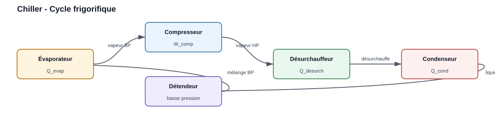
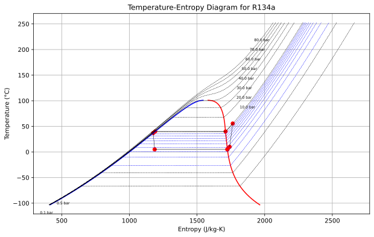
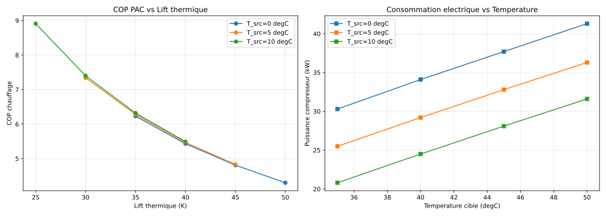

Chiller (Groupe froid / PAC)
Le module Chiller modélise un cycle frigorifique complet : évaporateur, compresseur, désurchauffeur, condenseur, détendeur. En mode PAC, la chaleur au condenseur est valorisée.

Le fluid frigorigène traverse successivement l’évaporateur, le compresseur, le désurchauffeur, le condenseur et le détendeur.
Paramètres
Paramètre |
Description |
Unité |
|---|---|---|
fluid |
Fluid frigorigène |
“R134a”, “R717”, “R744”… |
evap_params |
Ti_degC, surchauff, F |
dict |
comp_params |
Tcond_degC, eta_is, Tdischarge_target |
dict |
cond_params |
subcooling |
dict |
Example
from ThermodynamicCycles.Chiller import Object as Chiller
ch = Chiller(
fluid='R134a',
evap_params={'Ti_degC': 5, 'surchauff': 5, 'F': 1.0},
comp_params={'Tcond_degC': 40, 'eta_is': 0.75, 'Tdischarge_target': 90},
cond_params={'subcooling': 3}
)
ch.calculate_cycle()
print(ch.df)
# Diagramme température-entropie du cycle (dôme de saturation + isobares + cycle)
ch.plot() # figsize=(10, 6) par défaut
# ch.plot(figsize=(12, 7)) # taille personnalisée
# ch.plot_TS_diagram() # alias de ch.plot()
Output ch.df (valeurs réelles for l’example ci-dessus, R134a) :
Index ( |
Valeur |
Unité |
|---|---|---|
|
R134a |
|
|
5 |
degC |
|
40 |
degC |
|
35 |
K |
|
5,072 |
|
|
6,072 |
|
|
8,95 |
|
|
67,9 |
% |
|
30,39 |
kW |
|
0,0 |
kW |
|
154,13 |
kW |
|
184,51 |
kW |
|
55,5 |
degC |
|
3,50 |
bar |
|
10,17 |
bar |
Diagramme T-S généré by ch.plot()
La method ch.plot() (alias ch.plot_TS_diagram()) construit un diagramme
temperature-entropie via Temperature_Entropy_Chart : dôme de saturation du
fluid (courbe liquide en bleu, vapeur en rouge), isobares en pointillés
étiquetées en bar, et les huit points du cycle (ch.points) reliés by des
flèches — évaporation, surchauffe, compressure, désurchauffe, condensation,
sous-refroidissement, détente et retour à l’évaporateur.

Output réelle de ch.plot() for le cycle R134a de l’example (générée en
exécutant la bibliothèque). Les points rouges parcourent le cycle
frigorifique in le sens horaire.
Étude paramétrique
Le module fournit aussi Chiller.parametric_study(...) for comparer le COP
selon la temperature source et la temperature cible.
from ThermodynamicCycles.Chiller import Object as Chiller
df_study = Chiller.parametric_study(
fluid="R134a",
T_source_range=[0, 5, 10],
T_cible_range=[35, 40, 45, 50],
superheat=5,
subcool=3,
eta_is=0.78,
save_fig="chiller_parametric.svg",
)
print(df_study)
Colonnes du DataFrame df_study retourné :
Result |
Colonne du DataFrame |
Unité |
|---|---|---|
Temperature source |
|
degC |
Temperature cible |
|
degC |
Lift thermique |
|
K |
COP chauffage |
|
|
EER froid |
|
|
COP de Carnot |
|
|
Efficacité de Carnot |
|
% |
Power compresseur |
|
kW |
Power condenseur |
|
kW |
Extrait de df_study (R134a) — une ligne by couple (source, cible) valide :
T_source |
T_cible |
Lift |
COP |
W_comp |
Q_cond |
Eta Carnot |
|---|---|---|---|---|---|---|
5 |
40 |
35 |
6,28 |
29,2 |
183,3 |
70,1 % |
10 |
40 |
30 |
7,40 |
24,5 |
181,6 |
70,9 % |
0 |
50 |
50 |
4,30 |
41,3 |
177,4 |
66,5 % |
Plot sauvegardé by l’étude paramétrique (argument save_fig) :

Output réelle : figure à deux panneaux — à gauche le COP chauffage en fonction du lift thermique, à droite la power compresseur as a function of la temperature cible, with une courbe by temperature source.
Methods
ch.calculate_cycle()— Calcule le cycle completch.df— DataFrame de synthèse (EER, COP, powers, pressures)ch.print_results()— Affiche le df de chaque composantch.plot()— Diagramme T-S du cyclech.summary()— Synthèse technique du cycleChiller.parametric_study(...)— Étude paramétrique COP, EER, lift et power compresseur